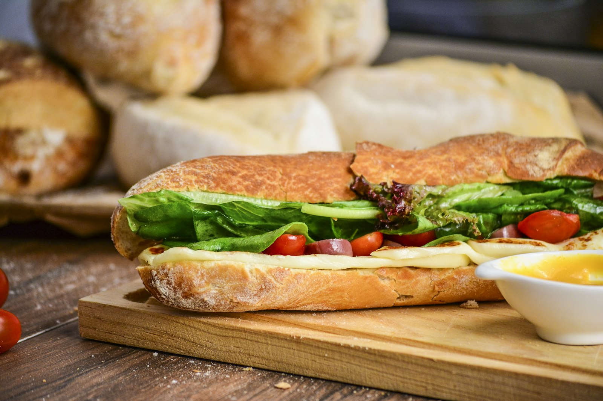

Lunch van 12:00 tot 14:30
Lunchen
Midden op de dag even genieten. Van heerlijk belegde broodjes en huisgemaakte soepen tot frisse salades. Elke week zijn er weekspecials, van seizoenssoepen tot creatief belegde broodjes. Kun je niet kiezen? Laat je verrassen door de chef met de Shared Lunchplank.
Voor groepen zijn er ook lunchbuffetten, perfect voor familiebijeenkomsten of om iets te vieren.